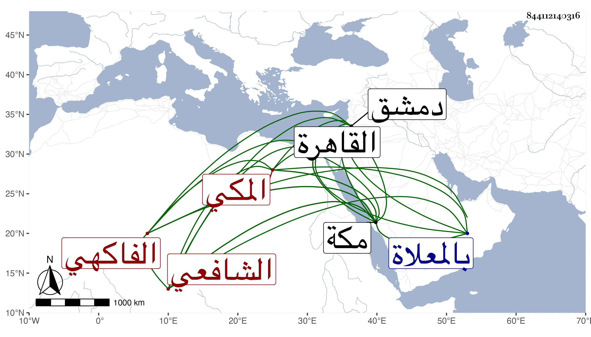

0902Sakhawi.DawLamic.ITO20230111-ara1.EIS1600.844112140316
Biography ID: 844112140316
396
محمد بن محمد بن علي بن محمد بن عمر بن عبد الله أبو الخير الفاكهي المكي الشافعي أخو علي الماضي وهو بكنيته أشهر. ولد كما بخط أخيه سنة أربع وأربعين وثمانمائة وكتب مرة أخرى سنة أربعين تقريبا وحفظ القرآن وعمدة النسفي والكافية ونظم قواعد ابن هشام لزيان المغربي وجمل الخونجي ومقدمة مختصر ابن الحاجب الأصلي والي الجراح من المنهاج الفرعي والي الاشتقاق من البيضاوي وإلى المجرورات من الخبيصي على الحاجبية وإلى الحال من التسهيل وقطعة من الفوائد الغياثية وفي مذهب ملك الرسالة وإلى الزكاة من المختصر ، وسمع علي التقي بن فهد والزين الأميوطي وأخذ عن المحلي والشرواني وابن يونس والبلاطنسي وآخرين بمكة ودمشق والقاهرة ، وفهم وتميز وتطور وتهور ونظم ونثر وأثرى وافتقر وهو أغلب أحواله وتلمذ وتمشيخ وصنف وتلطف وكتب أوراقا في الصلاة بالشباك المحاذي للمسجد وغير ذلك ، ولما كنت بمكة في سنة ست وثمانين لازمني في قراءة شرحي للألفية وغيره وسمع مني وعلى أشياء وما حمدت طريقته ولا رضيت مباحثته . مات بمكة في عصر يوم السبت سابع ربيع الأول سنة اثنتين وتسعين ودفن من الغد بالمعلاة بعد توعكه أسبوعا . كتب لي بذلك ابن أخيه أحمد بن علي وأثنى عليه وعلى ميتته رحمه الله وإيانا ومن نظمه . كذا
